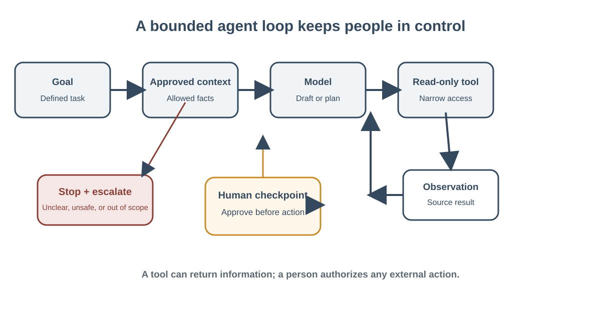

← Week 5: Privacy, Fairness, Agents, and Autonomy
Agent Workflows Need Boundaries
Learning objectives: Design a bounded professional workflow with appropriate AI or tool use, permissions, checkpoints, escalation paths, stop conditions, and evaluation.; Explain how an agent workflow can combine a model, instructions, tools, observations, and orchestration.; Match permissions, checkpoints, stop rules, and escalation to impact and reversibility.
Content
Agent Workflows Need Boundaries
Objectives: explain-agent-workflows; set-oversight.

Figure: Tool access and checkpoints define the boundaries of an agent workflow.
From a response to a process
A conversational assistant usually responds to a request with text. An agent workflow can go further: it may use a model to choose a step, call a tool, inspect the result, and continue. The term “agent” is used in different ways, so focus on observable capabilities. Can the system read files? Search records? Edit a document? Send a message? Make a purchase? The practical risk comes from access and authority, not the label on a product.
The model generates possible responses or actions from the context it receives. Instructions describe the task and restrictions. A tool is a capability such as searching a catalog or drafting a calendar entry. A harness is the surrounding software that manages the run and may limit access, record activity, or request approval. Orchestration coordinates multiple steps or services. These pieces can be arranged in different ways, but a useful map asks: what information flows in, what can the system do, what does it observe, and when can a person intervene?
Suppose a fictional office receives supply requests. A bounded assistant might read a made-up request, look up a product in an approved catalog, and prepare an unsubmitted order draft. It should not receive employee payroll records. The catalog search is read-only. The draft tool cannot submit payment. A person checks item, quantity, price, and authorization. If the item is missing, the price is unclear, or the order exceeds a set limit, the system stops and asks an authorized staff member.
Match autonomy to consequence
Autonomy is the amount of action a workflow can take without a person approving each step. More autonomy can save time, but it also increases the need for clear boundaries. Three factors help decide what is appropriate:
- Impact: What could happen if the system is wrong? Could someone lose money, access, safety, privacy, or an opportunity?
- Reversibility: Can the action be undone easily and completely? A draft is easier to reverse than a sent message or deleted record.
- Uncertainty: Are the instructions, inputs, or evidence incomplete or ambiguous?
Low impact, easy reversibility, and low uncertainty may support a limited automated step after a human sets it up. High impact, weak reversibility, or high uncertainty call for stronger review or a non-AI method. These factors are not a mathematical score. They are prompts for judgment. If one factor is high, reduce authority, add a checkpoint, or stop.
One way to picture autonomy is a ladder. At the bottom, the AI suggests. Next, it prepares a draft. Higher up, it may perform a reversible action after approval. At the top, it acts without step-by-step approval. Start at the lowest rung that helps. Move upward only when the task is well-defined, the tool is approved, test evidence is adequate, and a responsible person accepts the consequences. A product setting that allows an action does not establish that the action is appropriate.
Design checkpoints a person can actually use
A checkpoint should state what to inspect, which evidence to use, and when to pause. “Review the order carefully” does not tell a reviewer what matters. “Before submission, compare the catalog item, quantity, price, and delivery date with the request and current spending rule” does. Put the checkpoint before the action that is difficult to reverse or that affects someone else.
Reviewers need enough context to make a decision. A useful summary records the request, relevant source used, proposed action, uncertainty, and tool steps. It should not bury the reviewer in every generated sentence or imply that a model’s private reasoning is a reliable audit. Evidence should be inspectable: an approved policy, source record, or factual check. A log can help reconstruct events, but a log does not prove that the system selected the right evidence.
Permissions should follow the task. If a workflow only needs to draft a message, it should not have permission to send it. If it only needs one catalog, it should not search every company drive. Limit the scope, duration, and type of access where the tool allows. Separate reading from writing and drafting from sending. These boundaries make mistakes smaller and easier to catch.
Stop rules and escalation
A stop rule defines conditions under which the system must not continue. Examples include a missing source, conflicting dates, a price above the limit, an unexpected file, a request outside the approved purpose, or a tool error. Escalation explains the next step: ask the requester to clarify, route to an authorized reviewer, or use a manual process. Do not use “use your best judgment” as the response to a high-impact exception. State what the system should do when the case falls outside its design.
Consider a scheduling assistant that may draft shift coverage suggestions. If a worker’s availability is missing, it should not infer availability from past behavior. If the suggestion could affect a person’s hours, a manager must review it using fair, approved criteria. If someone reports an accommodation need, that sensitive information should be handled under policy and not passed casually into a general tool. The workflow can stop and route the situation to the appropriate person without exposing details to a system that does not need them.
A practical oversight plan
For any agent-assisted task, document five things: purpose, permitted inputs, allowed tools and actions, review checkpoints, and stop/escalation rules. Then identify who owns the final decision. Test the plan with ordinary and unusual fictional examples. Ask what happens when a source is unavailable, a request is unclear, or a tool returns an error. If the plan has no safe answer, narrow the workflow before use.
Text equivalent for the image
[Image placeholder: “A bounded agent loop.” Caption: Request and approved context flow to a model; the model may use a read-only tool, receive an observation, and prepare a draft. A human checkpoint sits before any external action. An uncertainty or boundary violation routes to stop and escalation, not another automatic attempt.]